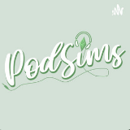

The Simis Portal.com


Pod Smis | Primeira temporada
Capitulo 1 | PARANORMAL no The Simis 4
Capitulo 2 | MODS E CP'S usar ou não usar
Capitulo 3 | Historias com The Simis (Spoiler: Tudo culpa do Lucas kkkkk)
Capitulo 4 | Console x PC (FEAT.Valeria do canal SIMSZI
Capitulo 5 | The Simis 5 Promete caivar entrega ovo
Capitulo 6 | PARALIVES Sera o fim do The Simis? (Feat: Vanessa do canal Girafa Rosa)
Capitulo 9 | Luz, câmera.... Ação! Series e Gameplays | The Simis 4
Capitulo 10 | Comunidade Simmer (Feat: Jeff Sims Play, Marcia, Bruna, Diegoe e Vitoria(Não achei o canal deles)
Fim da Primeira temportada
Pod Sims Todos os Direitos reserdos
Site feito por fã: Chanel HiFor You Vai lá da uma passadinha :)
:) :):) :) :) :0 :) :) :) :) :) :) :) :) :) :) :) :) :) :) :) :) :) :) :) :) :)